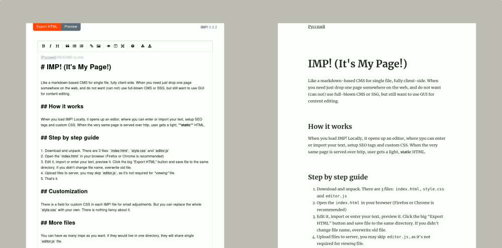

Girobusan
IMP! (It's My Page!)
Like a markdown-based CMS for single file, fully client-side. When you need just drop one page somewhere on the web, and do not want (can not) use full-blown CMS or SSG, but still want to use GUI for content editing.

System requirements
Descent browser, Firefox or Chrome preferred (tested). If you've updated your browser within last 4 years, it should be fine.
Features
- Fully local thing — no server required, no setup. It's YOUR page!
- Pages can be fully static, even text-based browser friendly (You'll need modern browser for editing)
- You can mix any HTML tags to your markdown
- All you need is browser, that means it fully multiplatform
- EasyMDE as Markdown editor
- Customizable
- Lo-fi :)
Wouldn't be possible without awesome projects like: